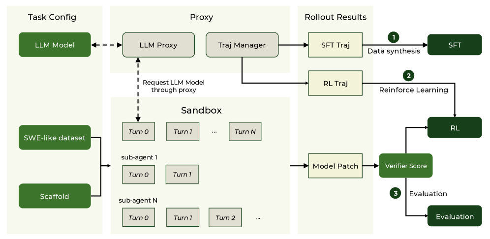
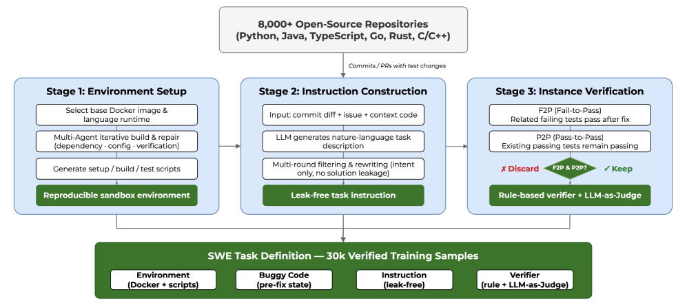
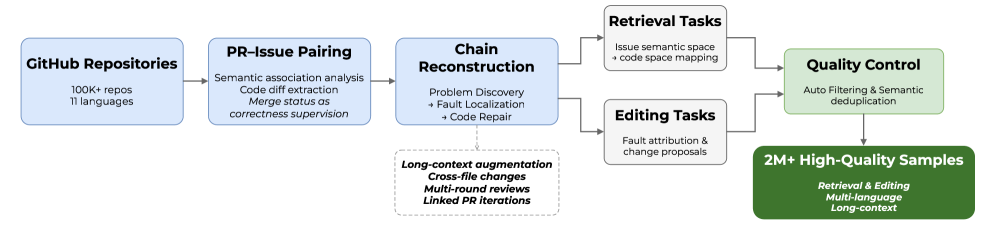
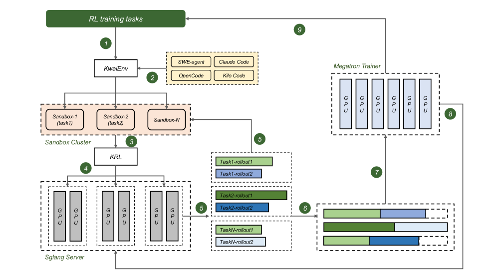
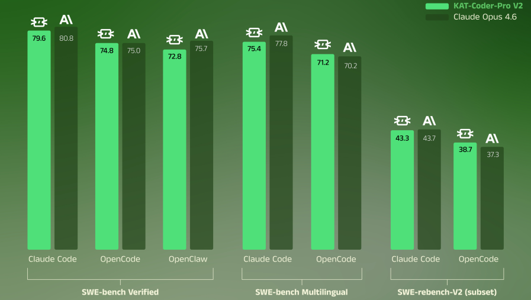
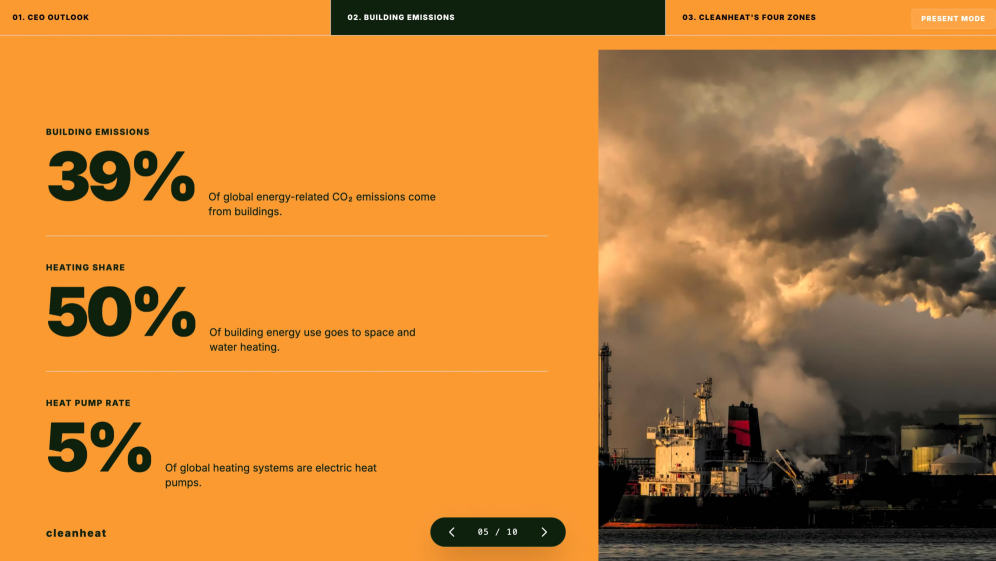

快手KwaiKAT团队发布KAT-Coder-V2，一个全面的Agentic Coding模型。核心范式Specialize-then-Unify：将Agentic Coding分解为5个正交专家域（SWE、WebCoding、Terminal、WebSearch、General），各自独立SFT和RL训练，再通过在线策略蒸馏 (OPD) 无损耗融合为单一模型。 配套的KwaiEnv基础设施解耦了数据集、沙箱、scaffold和验证器，支撑数万并发沙箱实例，并提出MCLA（MoE RL稳定性）和Tree Training（最高6.2倍加速）两项算法创新。
能力碎片化。 SWE任务需长链代码编辑+测试验证，WebCoding需在稀疏口语输入下做出审美判断，Terminal需持久化环境状态跟踪。跨域训练信号不仅不同而且常常冲突，单一管线同时达到所有域最优不现实。
基础设施耦合。 Agentic RL训练需要高吞吐沙箱编排、异构基准支持和与多种Agent scaffold的兼容。但现有系统紧密耦合这些关注点，每次新scaffold或数据集集成都是昂贵的工程工作。
Agentic RL扩展。 有效训练编码Agent需要在任务复杂度、prompt多样性和scaffold泛化三个维度同时扩展，同时应对MoE不稳定性以及树结构多轮轨迹带来的计算冗余。

KwaiEnv提供统一接口，支持模型、scaffold、数据集的灵活组合，形成模型轨迹收集→rollout评估→传递至RL引擎的闭环工作流。系统由五个核心模块组成，高度解耦：Dataset统一抽象接口屏蔽不同基准的任务格式差异；Verifier支持确定性评分、LLM-as-Judge和SWE评估三种验证策略；Scaffold在网络层代理模型请求，支持Claude Code、Kilo Code、Cline、OpenClaw、OpenCode等主流scaffold的黑盒集成（无需修改代码）；Sandbox数秒内触发大规模远程沙箱实例，支持数万并发；Trajectory Manager拦截所有LLM请求并记录完整元数据，格式化后输出给RL引擎。
SWE Expert： 围绕Issue-PR管线（从GitHub百万仓库提取PR-Issue配对，双向语义映射，>2M样本）、AutoBuilder管线（自动化从真实仓库构造可验证SWE任务，30K验证样本，F2P+P2P双重验证）和Code Comprehension管线（七阶段轨迹合成，150轮交互/任务）。

WebCoding Expert： 三类标签系统（用户感知→设计理由→技术实现），prompt重写策略（设计师注释版>1000字→专业用户200-300字→普通用户约50字）。首创的参考无关审美评价基准覆盖Landing Page（10维度）、Slides（5维度）、Data Visualization，由专业设计师panel在标准化条件下盲评。

Terminal Expert： 覆盖12个技术域，多Agent合成+Cross-format转换（SWE→Terminal）+开源集成（CLI-Gym、TermiGen等420+ CLI工具）。
WebSearch Expert： 基于搜索轨迹构建知识图谱，Pass@8过滤保留中间难度样本，rejection sampling fine-tuning筛选正确轨迹。
General Expert： 指令遵循+通用QA+代码数学推理，保持基础能力。
Agentic Scaling： 利用Autobuilder任务池，在任务复杂度、意图对齐和scaffold泛化三个维度系统化扩展RL数据，产出 >100K多样化高难度样本。采用Turn-level GSPO（在交互轮次粒度上计算importance ratio，保留MDP语义的同时实现精细信用分配）。
MCLA（Monte-Carlo Log-probability Averaging）： MoE RL训练中，估计的policy log-probability因随机专家路由存在噪声，导致importance weight高方差。MCLA将每条轨迹前向prefetch K=8次，对log-probability取平均，显著降低estimator方差。与IcePop（抑制训练-推理分布不对齐）结合，实现高度稳定的训练。
Tree Training： 现代Agent scaffold产生树结构而非线性的训练轨迹。朴素方法将分支线性化为独立序列时共享前缀被重复计算。Tree Training将整棵树序列化为DFS扁平序列+per-token loss加权，在FlashAttention V3上实现树结构attention mask。在实际agentic RL rollout上实现最高6.2倍端到端训练加速。

训练时，统一Student模型在混合域prompt上主动生成完整轨迹。联合优化两个目标：RL loss（通过环境提供稀疏奖励）和OPD loss（动态选择每个任务的最佳专家作为Teacher，用其log-probability提供稠密step级监督）。 这种做法避免了计算昂贵的全logit蒸馏，同时提供了无偏优化目标。凝聚多样化专用能力到单一权重集不可避免地引入轻微性能下降，但联合优化有效缓解了灾难性遗忘。
SWE-bench Verified： 在Claude Code上79.6%（vs Claude Opus 4.6的80.8%），OpenCode上74.8%、OpenClaw上72.8%。在多语言子集上同样接近。

Agent基准： PinchBench最佳得分88.7（超越GLM-5的86.4和MiniMax M2.7的87.1），Claw-Eval Pass@1与最强模型差距较小。
前端审美生成：三个场景全部第一：Landing Page 59.8、Slides 57.6、Data Visualization 67.6，显著超越GLM-5和Kimi K2.5。

通用任务： Terminal-Bench Hard 46.8、τ²-Bench Telecom 93.9、AA-LCR 68.0，保持强通用能力。
参考：https://arxiv.org/abs/2603.27703